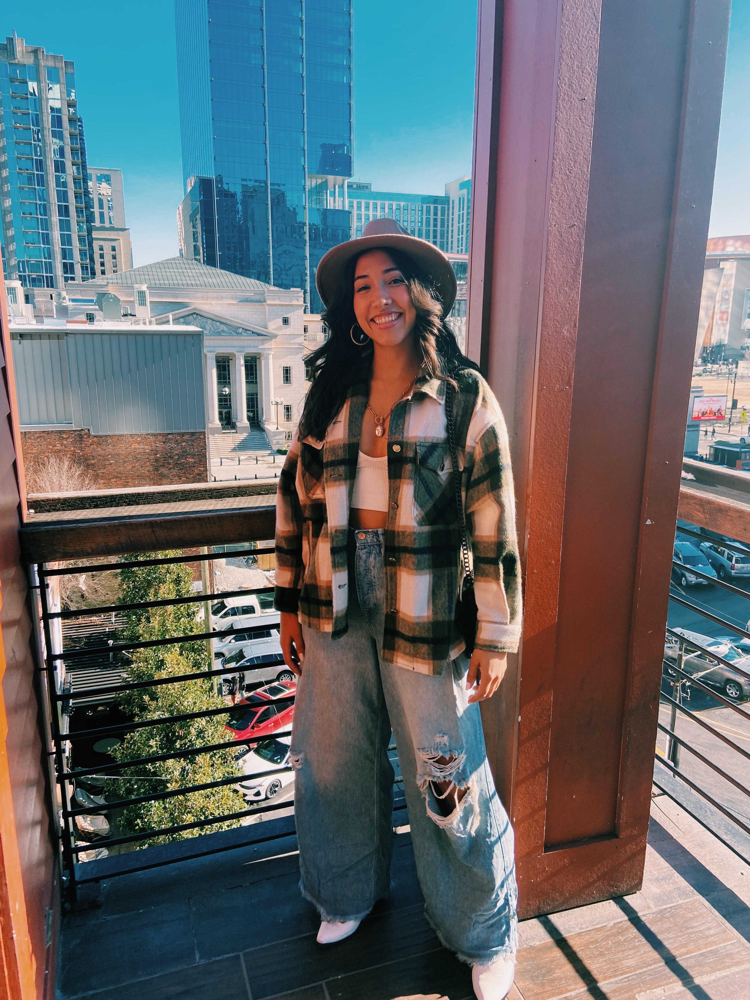

| About Me & My Goals | ||
|  |
My name is Sydney McLaughlin, I am a 21 year old entrepreneurship
major at Babson College. I was originally born in Sydney, Australia.
After moving to the states around the age of three (missing out on a
cool Aussie accent) I spent most of my childhood in DoverSherborn
Massachusetts. In high school I was introduced to the idea of
sustainability in my Environmental studies class and my interest was
further peaked in my Marine Biology class. An early passion for the
environment and sustainable businesses bloomed and I decided to
continue my studies at Babson College in Wellesley MA.
Babson seemed like the perfect choice for me as I had always wanted to follow in my father's footsteps and create my own business. Specifically a business that could help in the fight against climate change and the destruction of our planet whose beauty I gained a deep appreciation for at a very young age. Babson was known for its entrepreneurship and I hoped I could find a way to bridge my passion for the environment and dream of starting a business. Babson has and is still a great school that has helped me propel my ideas and further my education in my areas of interest. Obviously climate change is a large topic that has many different factors and industries that contribute to the overall problem. In my Entrepreneurship in Fashion class, I discovered that the fashion industry is responsible for 10% of human-caused greenhouse gas emissions and is the world's second-largest clean water polluter, producing over 21 billion tons of waste each year. The fashion industry itself is responsible for more annual carbon emissions than all international flights and shipping combined, with an expected increase of 50% in the next decade. These figures we shocking and can be attributed the trend of "fast fashion." Realizing this issue and understanding that it has become the consumer's responsibility to reduce these figures can be a hard pill to swallow and often extremely difficult. |
|
| That is why I have created this webpage, as a resource for people like myself, who love fashion but want to practice fashion in a sustainable way. I have always been in love with fashion, but it directly interfered with my love for the environment so I wanted to find a solution to bring the two together. There are many solutions to the fashion problem such as circular business models, thrifting, and upscaling, all which I will discuss on this webpage. However, there are imitations to these solutions and often times they can be unrealistic when searching for a specific product, style or look. This webpage pushes pass those limitations it features the trendiest items of the season and shows where you can get these products from sustainable companies. Hopefully, it will take the hassle and excessive research needed to find sustainable products, and readers can get the best of both words. | Eventually, my goal is to bring the ideas of this webpage and turn it into a company. My idea is to create and extension, similar to "Honey" the coupon browser extension. Similarly to Honey, my extension would provide a pop up-like window when shopping on large retailers like Amazon or Walmart. The pop up window would take in the information of the product the user is looking at and use an algorithm or database to find a similar product that is sustainably made. This extension would eliminate all the in-between steps and show side by sides of the same product, with a price comparison, and direct link to the company that is producing the sustainable alternative. This idea is its beginning stages but it would be my dream to launch something of this nature after I graduate. I hope to build up content around the topic in the meantime. Have fun exploring my pages! | |